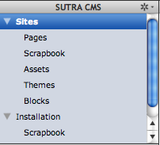
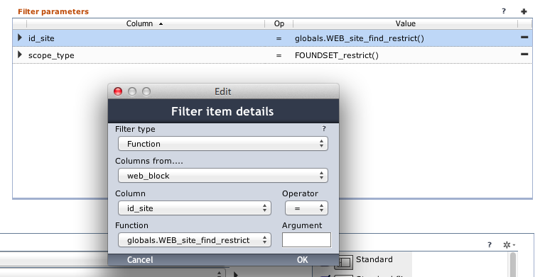
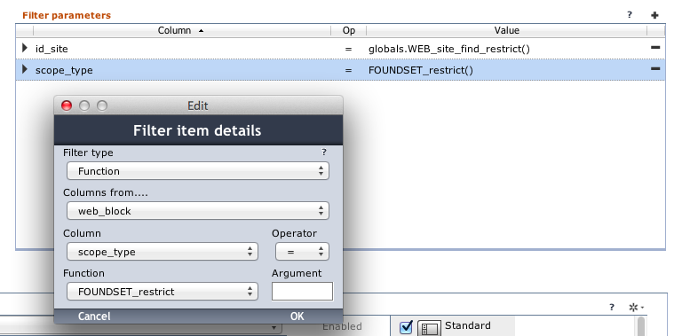
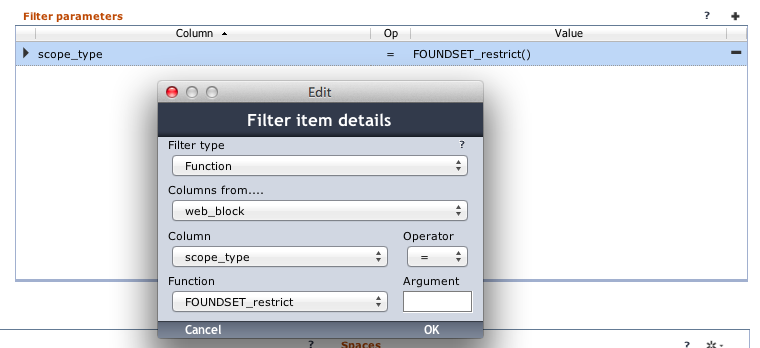
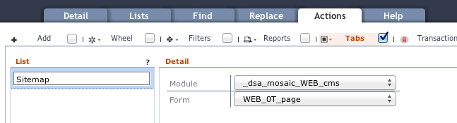
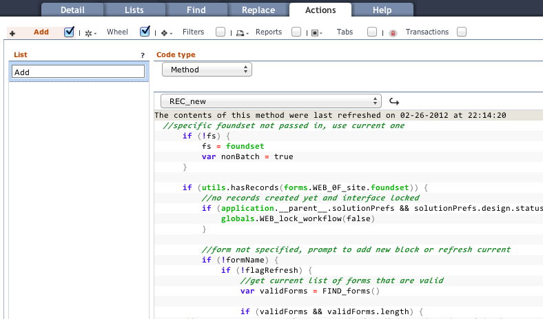
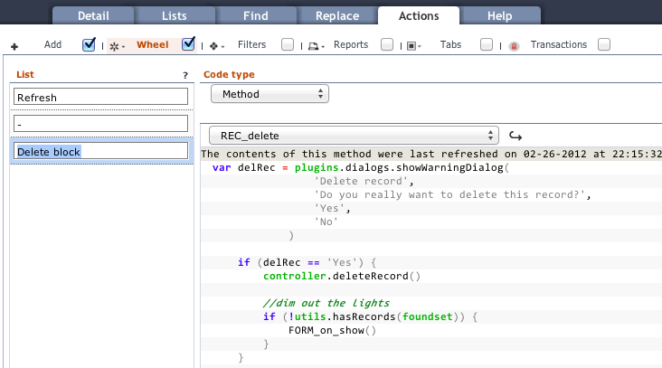
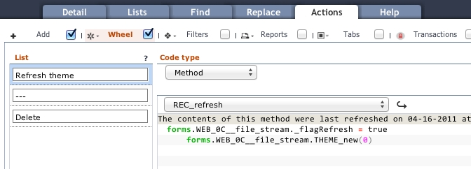

Installation
Installation requires Data Sutra.
Installing Sutra CMS is exactly the same as installing [Data Sutra] except that you need to add an additional database connection called
sutra_cms.
Installing the Sutra CMS modules
Files
Download installation files here
README.txt
Some basic instructions.
sutra-cms_standalone.servoy
Servoy install file with sample data. Includes the following modules:
_dsa_mosaic_WEB_cms_dsa_mosaic_WEB_cms_blocks_dsa_mosaic_WEB_cms_connector_dsa_mosaic_WEB_cms_resources_ds_CODE_resources
sutra-cms.sql
A MySQL dump file of all data. Included just in case. Not sure how well it will work with PostgreSQL.
sutraCMS directory
Place this directory in Servoy’s server ROOT directory:
/Servoy/application_server/server/webapps/ROOT/sutraCMS
Installation
1. Create the following database connections
sutra_cms
2. Install plugins
- [The Browser Suite](https://www.servoyforge.net/projects/browsersuite) using the associated instructions
- [keyListener.jar](https://www.servoyforge.net/projects/keylisteners) using the associated instructions
3. Install files
Import the sutra-cms_standalone.servoy file
Place the sutraCMS directory in the Servoy/application_server/server/webapps/ROOT directory
4. Include CMS modules
Include the _dsa_mosaic_WEB_cms module into the __datasutra__connector module. This will include all the CMS dependent modules will be as well.
Server Settings
Open http://localhost:8080/servoy-admin/plugin-settings and set the
file plugin default path to “/”.
Configuring Data Sutra
Forms
Go to the Data Sutra Navigation engine configuration pane, create a
new workspace, and setup the following navigation items:
- Sites:
WEB_0F_site- Pages:
WEB_0F_page - Scrapbook:
WEB_0F_block__site(site scoped scrapbook) - Assets:
WEB_0F_asset - Themes:
WEB_0F_theme - Blocks:
WEB_0F_block
- Pages:
- Installation:
WEB_0F_install- Scrapbook:
WEB_0F_block__install(install scoped scrapbook)
- Scrapbook:
This will result in a workspace that looks like this:

Form filtering
Both of the scrapbook navigation items need filters applied.
- Sites > Scrapbook > first filter

- Sites > Scrapbook > second filter

- Installation > Scrapbook > first filter

Universal Lists
Data Sutra allows you to easily create list forms without coding for each navigation main form. Hence, you will not find list forms in the Sutra CMS modules. You will need to create these yourself as needed.
In the Navigation engine configuration pane, select the Lists tab
and create a universal list for each navigation item. These are the
columns we recommend:
- Sites:
site_name- Pages:
page_name,page_type | type: Valuelist | mask: WEB_page_type,rec_modified | type: Date | mask: MM-dd-yyyy or similar - Scrapbook:
block_name - Assets:
asset_name,asset_type | type: Valuelist | mask: WEB_asset_type - Themes:
theme_name - Blocks:
block_name
- Pages:
- Installation: (no list required)
- Scrapbook:
block_name
- Scrapbook:
Page tree view
To set up the tree view for the Pages navigation item
- go to the Data Sutra
Navigation engineconfiguration pane - select the
Actionstab - select the
Tabstab and turn on the checkbox - create a
Listitem calledSitemap - assign from module
_dsa_mosiac_WEB_cmsformWEB_0T_page

Actions
For each of the main forms there are a number of methods that you need to expose to your users. We prefix user triggered methods typically with “REC_”.
1. REC_new
1. go to the Data Sutra `Navigation engine` configuration pane
2. select the `Actions` tab
3. select the `Add` tab and turn on the checkbox
4. create a `List` item called `Add`
5. assign `REC_new` of code type `Method`
Do this for all navigation items except Pages and Installation.

2. REC_delete
1. go to the Data Sutra `Navigation engine` configuration pane
2. select the `Actions` tab
3. select the `Wheel` tab and turn on the checkbox
4. create a `List` item called `Delete`
5. assign `REC_delete` of code type `Method`
Do this for all navigation items except Pages and Installation.

3. Additional Wheel methods
1. On the `Themes` page add `List` item called “Refresh theme” and
assign method `REC_refresh`
2. On the `Blocks` page add `List` item called “Refresh block” and
assign method `REC_refresh`
